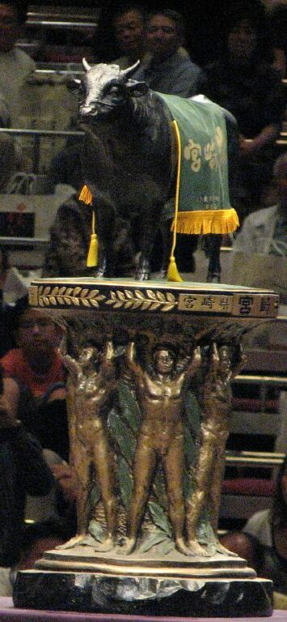
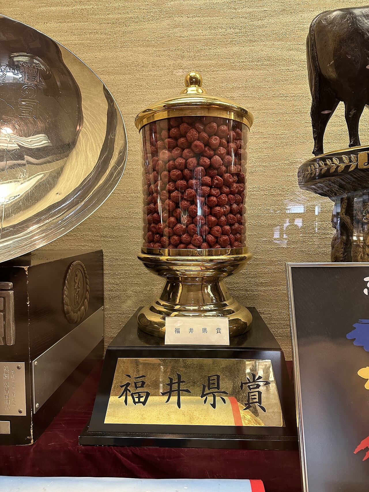

These are the governmental trophies given out to the wrestler who wins the yusho (championship) in the top division:
- Miyazaki Governor's Award
- Fukui Prefectural Prize
- Nara Prefectural Governor's Award
Tokyo Specific Governmental Trophies
- Tokyo Metropolitan Governor's Award
- Fukushima Governor's Award (and 15 kg (33 lb) tawara straw bag of rice)
Osaka Specific Governmental Trophies
- Osaka Prefectural Governor's Award
- Wakayama Prefectural Governor's Prize
- Yuasa Mayor's Award (and fermentation wooden barrel)
Nagoya Specific Governmental Trophies
- Aichi Prefectural Governor's Award (and bouquet)
- Nagoya Mayor's Award (Makuuchi)
- Nagoya Mayor's Award (Juryo)
Fukuoka Specific Governmental Trophies
- Fukuoka Prefectural Governor's Prize
- Fukuoka Mayor's Award

